Bitterroot Valley, MT · Custom Metalwork
This porch needed a handrail with some real character, so instead of a stock metal rail we forged one by hand from raw steel bar stock. That meant lighting the forge, heating and tapering the bar, and hand-shaping every scroll section — chalking the scroll pattern out on a board first as a template, then bending, grinding, and finishing each piece to match.
Once the scrollwork was done, the full rail was dry-fit on the lawn to match the actual stair run before it ever touched the porch, then installed on the brick steps with the baluster spacing checked by hand. It's a good look at the kind of custom detail work we can bring to a project beyond framing and finish carpentry — blacksmithing included.
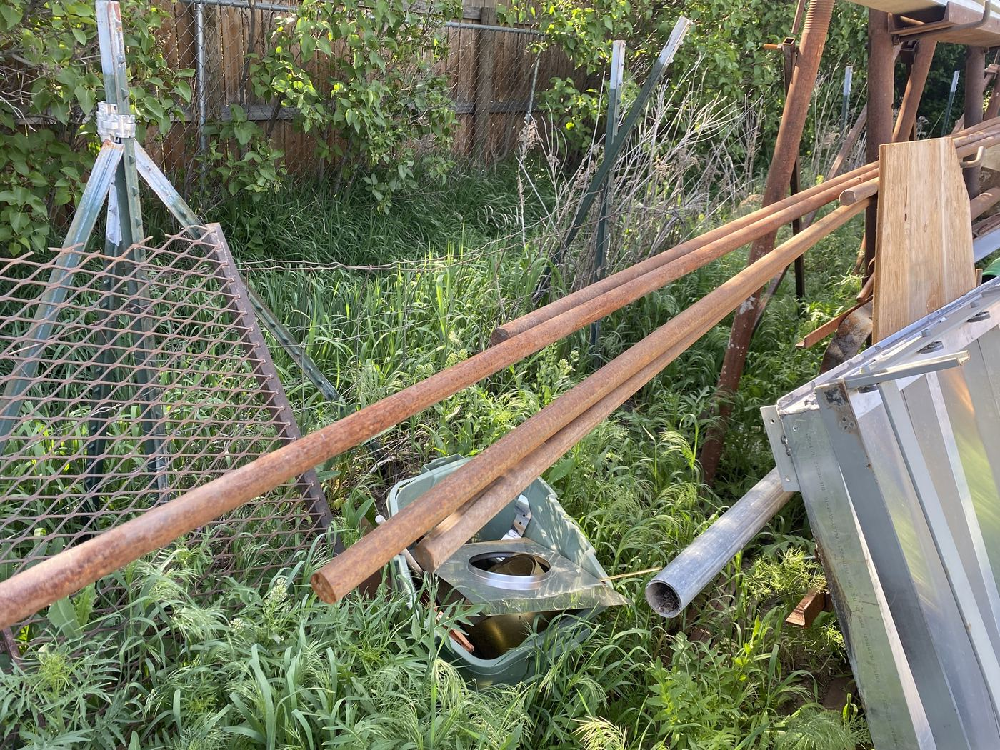
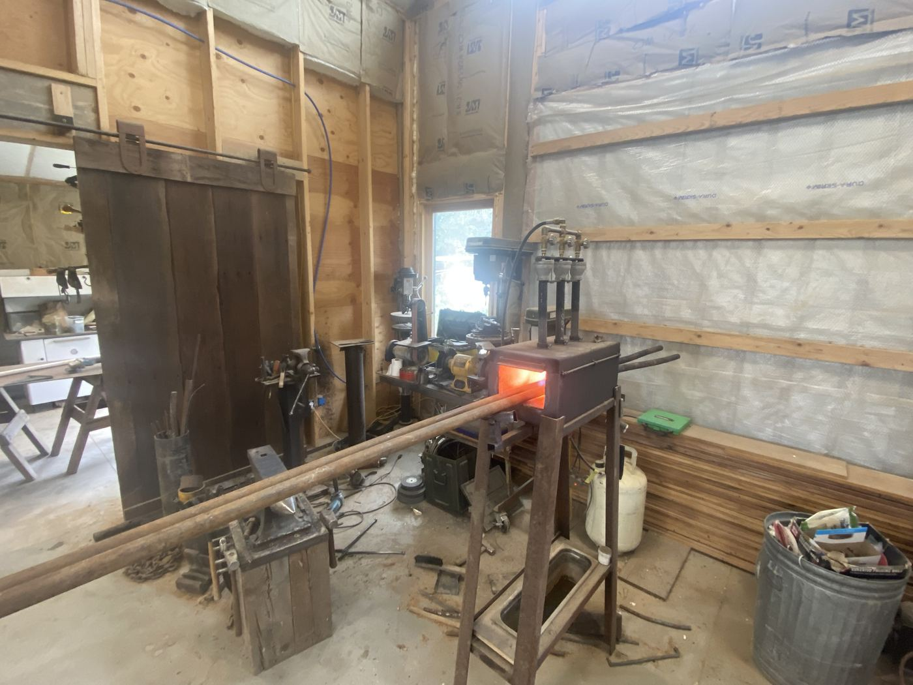
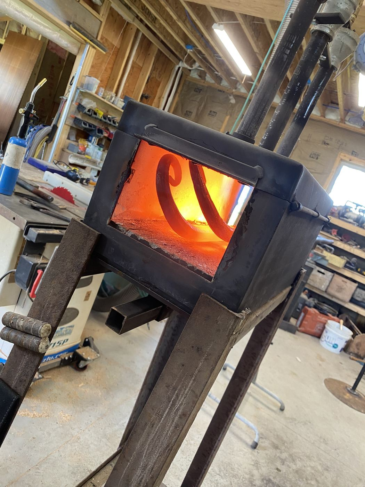
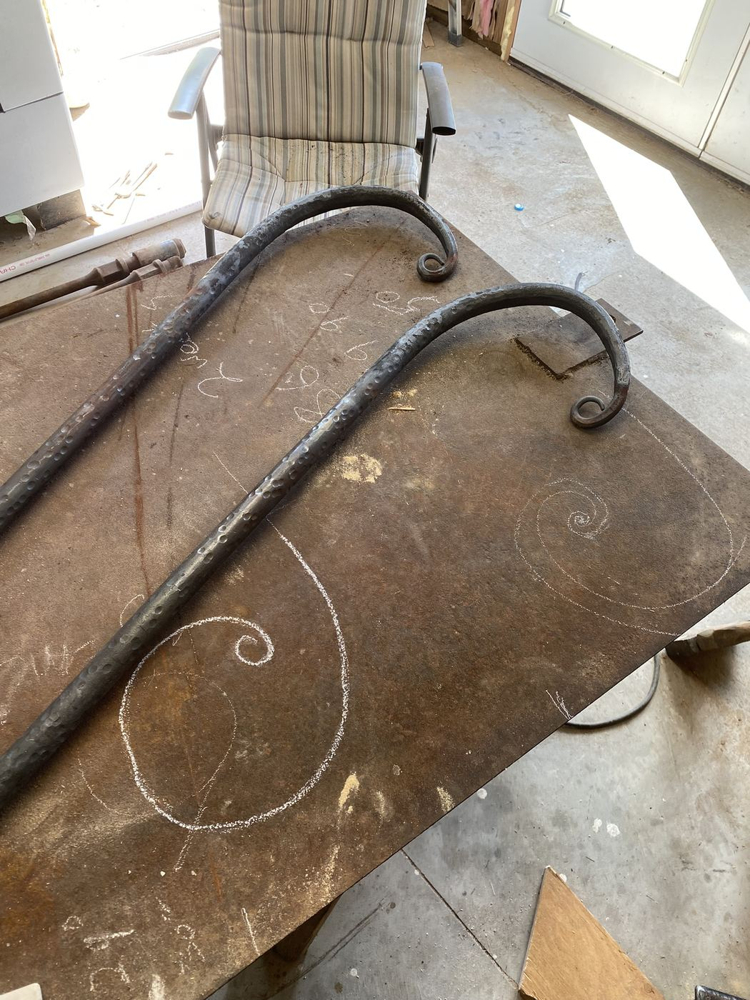
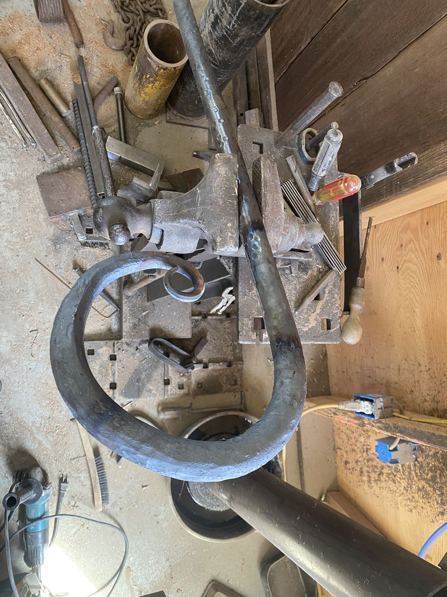
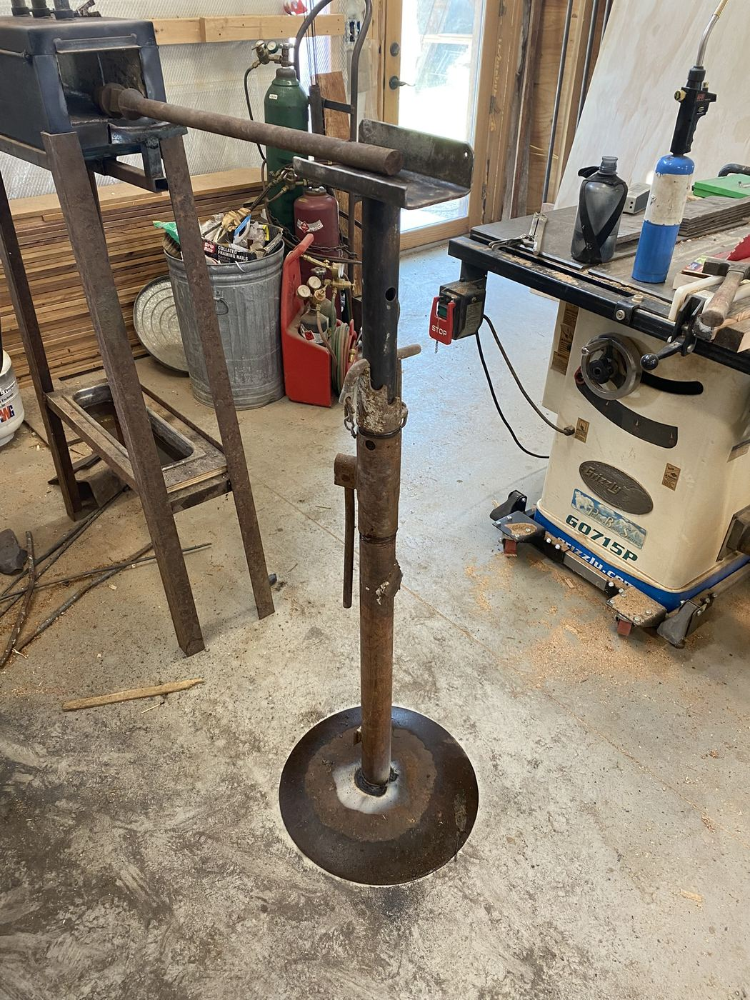
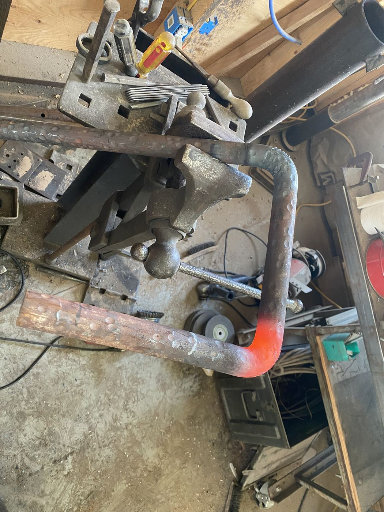
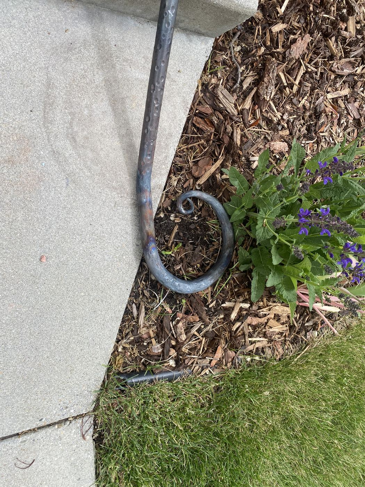
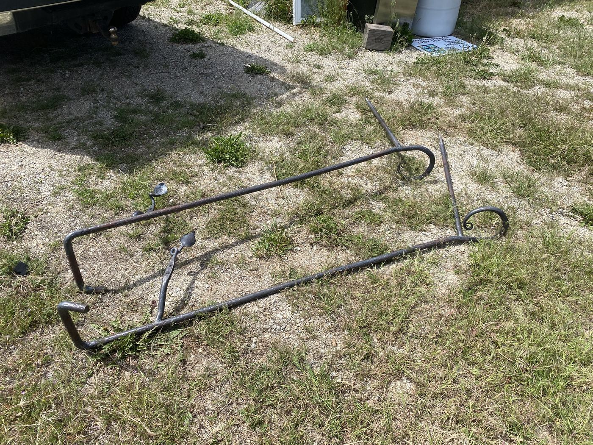
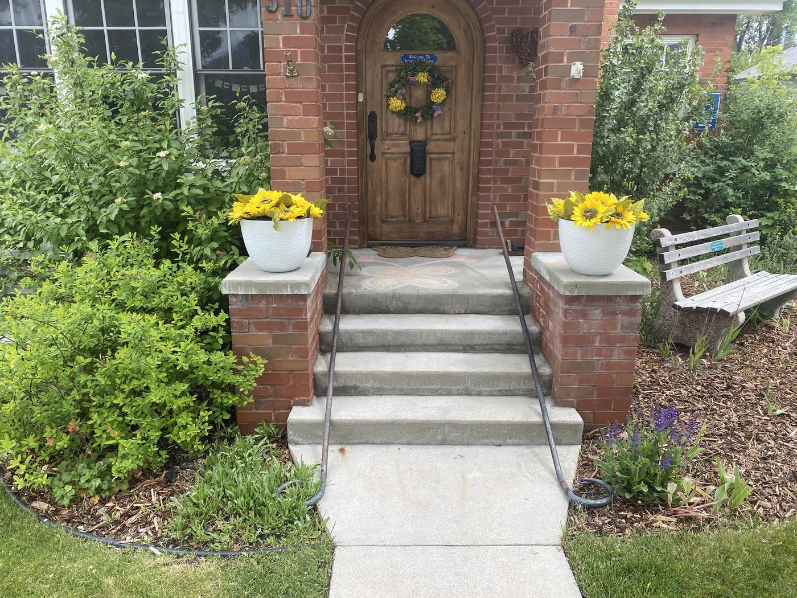
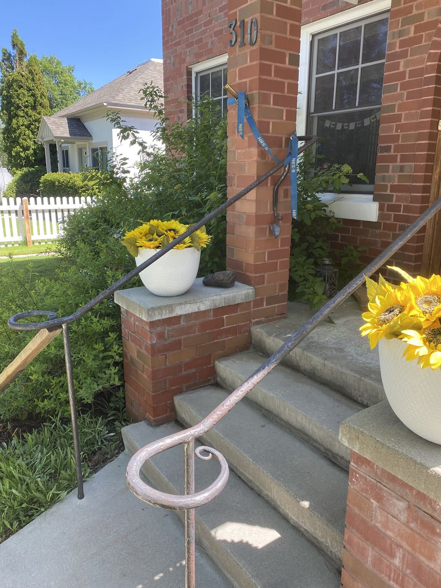
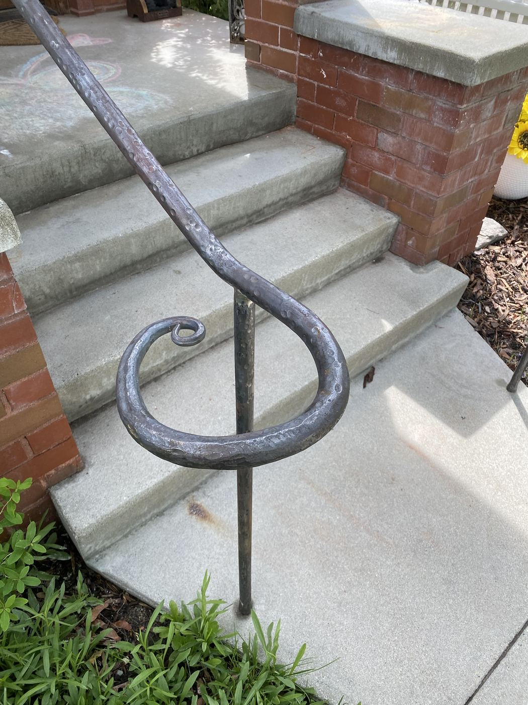